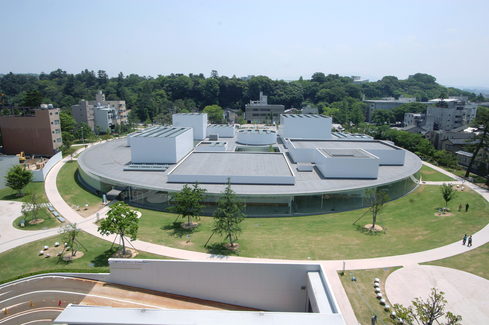
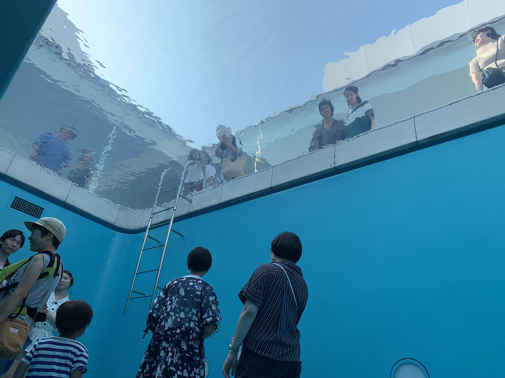

Overview

Photo credit : Kanazawa City
21st Century Museum of Contemporary Art is representative of the new culture in Kanazawa. People in Kanazawa called the museum “Marubi” which means a round museum because of the shape of the building. This is the most popular sightseeing spot for young people. In 2015, this museum was at the top of the ranking of number of visitors in museums in Japan.
THE FOUR GOALS
- To be a museum that moves in step with contemporary society.
- To create a participation-oriented museum along with citizens and revitalize the community.
- To be an art museum open to the world, where regional traditional arts connect with the future.
- To grow in spirit along with children.
Exhibitions

The Swimming Pool
There are many exhibitions of contemporary art which stimulate people emotionally. You can appreciate them not only by your eyes, but also your body and your ear. In addition, you can take a picture of some of these exhibitions. It will be the most Instagrammable photo in your Kanazawa trip!
INFORMATION
| Hours | 10:00 – 18:00 |
|---|---|
| Regular Holiday | Mondays |
| Admission | ¥450 |
| Address | 1 Chome-2-1 Hirosaka, Kanazawa, Ishikawa 920-8509, Japan |
| Home Page | www.kanazawa21.jp/en/ |